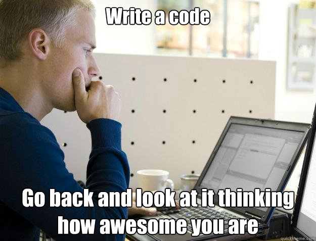

Will Klein
Travelers JavaScript Users Group
March 5, 2013
http://willkle.in
github.com/willklein
engineer @ Travelers
easily distracted by open source
We wrote spaghetti code
It sucked
Example (viewer discretion is advised)
We've gotten better, right?
<a href="somewhere.html">Some link</a>
...you get the idea.
Sometimes, but at what cost?
The developer experience is valuable

taking HTML (or something like it),
dynamic data (typically JSON),
and binding the data into the HTML to populate your content.
<a href="somewhere.html">Some link</a>
Released in 2009
Written in Ruby by Chris Wanstrath
Inspired by ctemplate (C++) and et (Erlang)
Ported everywhere
Has a spec
Handlebars.js is a superset of Mustache.js
Hogan is a Mustache compiler
Written for Node.js by TJ Holowaychuk
Inspired by Haml (born in Ruby)
Can be deployed to the browser
Written in CoffeeScript by Jarno Keskikangas
*Pure* HTML templates
DOM based
Semantic data binding
We do actually care about performance
Some browsers are (hella) slow
Templating can *improve* responsiveness (perceived performance)
Keep some things server-side
Initial page-load HTML can be done server-side
Hybrid approach
Share templates when possible
Templating can provide:
Questions?
/
#